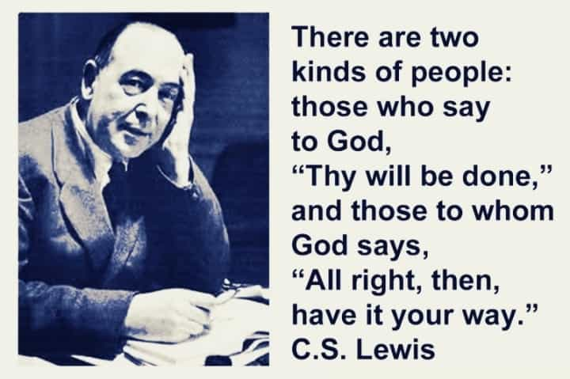
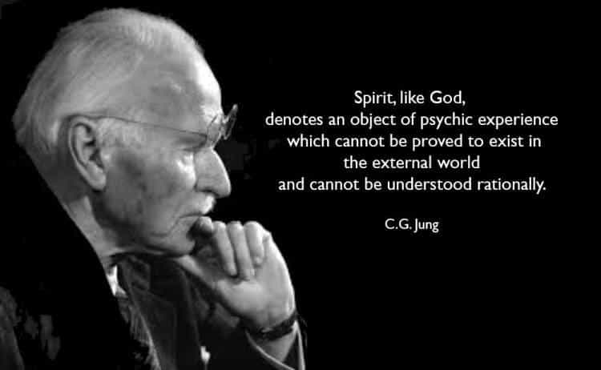

The path to happiness and peace is paved with the scripts of thousands of lifestyle gurus who have developed their own way to get your life on track. Breathe like Wim Hof and you can climb Everest shirtless. Read Gorilla Mindset and unleash your inner alpha. Read a book a day and Tai Lopez will make you a billionaire overnight.
It’s not my intention to demean the methods within these works. Each contains certain truths and provides legitimate practices that can enhance one’s life. However, they ultimately do not satisfy what lies dormant in the souls of the beta males, the addicts, the unmotivated, and so on. Only through a genuine rebirth in religion can the disenfranchised members of our society find personal fulfillment.
I was raised in a casually Catholic home—the twice-a-year Catholic type. I went to a private Catholic school. I took over a decade of religion classes. I became a non-believer by the time I was a teenager, and assumed my internal debate on the issue was settled. I told my religious friends I still had an open-mind, and I meant it. As an atheist, though, I thought that barring divine intervention, nothing would alter my perception. I was ready to be knocked off my horse, so to speak, but wasn’t expecting any miracles.
My mind would slowly be changed over a year and then drastically over a month. The gateway was Jordan Peterson’s biblical lectures that revealed the apparent value of the Bible. Things accelerated once I read Modern Man in Search of a Soul by Carl Jung.
I must take a slight detour to illustrate my next point. Jung devotes a chapter to his differences with Freud. To summarize, Freud viewed the subconscious as a manifestation of man’s darkest side, while Jung saw both light and dark. Within the light, he identified man’s spiritual element that has existed as far back as his expressing it on cave walls. He observed that religion was a way of nourishing psychic health, especially during eruptions of chaos either on a personal level (e.g. divorce) or a societal level (e.g. war).
When I read this, I thought of my own friends who had serious religious commitments. Two protestant friends of mine, so sure in their faith, had never been drunk, never tried a drug, rarely swore (only to have a real effect), were unencumbered by cell phone addiction, had genuinely contagious joy, and had a real community of good people behind them. One came from a broken household, the other from a wealthy, nuclear family. I was impressed with their virtue, but told myself, “Yes, religion is good and necessary for many people. I would never try to strip someone of his or her faith. But of course, it is not necessary for ME.”
What finally convinced me to repent from my spiritual neglect was a meeting I had with an old friend. I had not seen him since my last year of high school, in which I remembered an unsure, struggling individual. A good person? Absolutely. At peace? Hardly. He was diagnosed with Crohn’s disease when he was seventeen, his parents divorced soon after, and tendonitis sidelined him from athletic activities (of which he had considerable talent). He began smoking weed, and the friends he adopted only promoted further delinquency.
A year later he began to take his faith seriously, and when I met him for dinner years later, his transformation was unmistakable. He exuded confidence and carried an unmistakable contentment. He told me his story, and it was then that the words of Carl Jung totally resonated.
What’s more, philosophy proves to be no substitute. For years up to that point, I had been a listener of Stefan Molyneux’s, who lays out a tidy code of objective ethics that ties up loose ends and provides a path toward a virtuous life. I had never read his book, but understood the basic premise was the golden rule, “Do unto others as you would have done unto you.”
The problem with following any code of ethics forwarded by any philosopher is they have no mechanism by which to compel someone to moral behavior. Is consuming alcohol going to trespass on someone’s property rights? No? Good. I won’t have to face the ugly truth of my alcoholism. In this way, Stefan’s objective ethics are not objective at all. Ethical codes are useful insofar as they actually bend human behavior. Otherwise, it is simply logic, which is intellectual dung without any means of application. Who actually approaches interactions with the golden rule at the forefront of their mind, anyway?
God’s code gives a proper framework for morality that rests in the spiritual element of man’s mind. It is only through occupation of one’s spiritual capacity that man is compelled to good behavior. In this way, God exists in a real, tangible sense. Forget who created the universe—it doesn’t really matter and we may never know. Forget the apparently unfathomable prospect of a divine creator—religion is not about having all the answers. It is about sustainable happiness and peace through prayer and sacrifice, not self-help books, possessions, or supplements.

Our toxic culture, so intent on saddling us with the burdens of degeneracy and degrading our most pure institutions, apparently has little affect on those who take their respective religion seriously. It is through Christianity’s fruits I came to know God (Matthew 7:15-20), and once you take up the mantle of religious devotion, you will begin to see the fruits manifest within yourself, and then you will begin to love Him.
Don’t know where to start? Mere Christianity, written by former non-believer C.S. Lewis, is a captivating introduction. I recommend attending traditional Catholic Mass, spoken entirely in Latin (besides the sermon), hosted by the uncucked, red-pilled branch of the Catholic Church “Society of Saint Pius X.” Most importantly, get in touch with your spiritual friends, who will happily guide you through the process of awakening your latent spirit—an act of defiance in a godless world.
Read More: 7 Reasons Why Self-Improvement Is Not Working For You